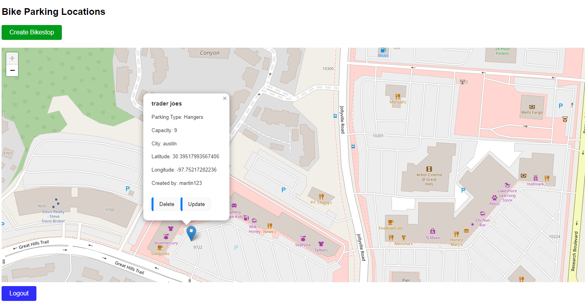

I am passionate about all things transit and energy and am a firm believer that one of the best things that we can
do for the environment now is not to drive the latest EV/AV but to simply take public transit. As simple as it sounds, I
understand that there is a lot of work that has to be done to make transit feasible and I want to make the transition
to transit easier.
Website to locate closest Places of Interest (POI) by taking only one bus within Austin.
Built with Flask, pandas and folium. This was inspired by my time living in Austin without a car
and wondering what were some places I could visit easily!
One Bus
One Bus Repo

API with CRUD functionality built with Django and React. This was inspired by my time in Berkeley
and biking everywhere. I often found it difficult to know where the optimal place for me to
park my bike was. Hence with this API, bikers can help record information about where various bike
parking is around them.
bikeAPI
bikeAPI Repo
